Part 26
24.Welcome to the final* update of the thread. This where the odds and ends go: missed/secret poems, file mysteries, theories and ultimately the 100% ending. I sure hope you like reading! If you dont care about any of the subtle game detritus and just want to see what happens to the gang after getting all of the CGs, skip past all the text coming up and catch up with us at the end. Well wait for you.
I'm just going to say right now that I do not intend, nor have I ever intended, to show off every single interaction in this game. There are still conversations that we've missed and Act II glitches that haven't been shown off. I'd love to say that they've been excluded because I wanted to give you something to experience on your own...fun little unexpected surprises that you might not have been expecting after seeing a full and complete rundown. That would be a more noble response than "I'm mentally exhausted and have reached the point that I always do in LPs where I'm just ready to be done", so you know what? Screw it, I'm going with the first excuse. Aren't I merciful?
-----
Natsukis Missed Poems
Natsukis second poem was never shown to us because she hated our poems.
quote:
Amy Likes Spiders
You know what I heard about Amy?
Amy likes spiders.
Icky, wriggly, hairy, ugly spiders!
That's why I'm not friends with her.
Amy has a cute singing voice.
I heard her singing my favorite love song.
Every time she sang the chorus, my heart would pound to the rhythm of the words.
But she likes spiders.
That's why I'm not friends with her.
One time, I hurt my leg really bad.
Amy helped me up and took me to the nurse.
I tried not to let her touch me.
She likes spiders, so her hands are probably gross.
That's why I'm not friends with her.
Amy has a lot of friends.
I always see her talking to people.
She probably talks about spiders.
What if her friends start to like spiders too?
That's why I'm not friends with her.
It doesn't matter if she has other hobbies.
It doesn't matter if she keeps it private.
It doesn't matter if it doesn't hurt anyone.
It's gross.
She's gross.
The world is better off without spider lovers.
And I'm gonna tell everyone.
From the Wiki: Natsuki says that the "message is pretty straightforward in this poem" after showing it to the player. She elaborates, noting that "everyone has some kind of weird hobby, or a guilty pleasure" and that people shouldn't care "as long as they're not hurting anyone, and it makes them happy".
The next poem we missed because, as before, she hated our poems. This is the poem you get if she doesnt like all of your poems up to day three.
quote:
Ill Be Your Beach
Your mind is so full of troubles and fears
That diminished your wonder over the years
But today I have a special place
A beach for us to go.
A shore reaching beyond your sight
A sea that sparkles with brilliant light
The walls in your mind will melt away
Before the sunny glow.
I'll be the beach that washes your worries away
I'll be the beach that you daydream about each day
I'll be the beach that makes your heart leap
In a way you thought had left you long ago.
Let's bury your heavy thoughts in a pile of sand
Bathe in sunbeams and hold my hand
Wash your insecurities in the salty sea
And let me see you shine.
Let's leave your memories in a footprint trail
Set you free in my windy sail
And remember the reasons you're wonderful
When you press your lips to mine.
I'll be the beach that washes your worries away
I'll be the beach that you daydream about each day
I'll be the beach that makes your heart leap
In a way you thought had left you long ago.
But if you let me by your side
Your own beach, your own escape
You'll learn to love yourself again.
This poem is connected to Yuris third non-exclusive poem, which we missed because we went full Yuri our first route. Well see that one in a bit.
Next is the poem we did see, but with the Base64 code decrypted.
quote:
SSBjYW4gZmVlbCB0aGUgdGVuZGVybmVz
cyBvZiBoZXIgc2tpbiB0aHJvdWdoIHRo
ZSBrbmlmZSwgYXMgaWYgaXQgd2VyZSBh
biBleHRlbnNpb24gb2YgbXkgc2Vuc2Ug
b2YgdG91Y2guIE15IGJvZHkgbmVhcmx5
IGNvbnZ1bHNlcy4gVGhlcmUncyBzb21l
dGhpbmcgaW5jcmVkaWJseSBmYWludCwg
ZGVlcCBkb3duLCB0aGF0IHNjcmVhbXMg
dG8gcmVzaXN0IHRoaXMgdW5jb250cm9s
bGFibGUgcGxlYXN1cmUuIEJ1dCBJIGNh
biBhbHJlYWR5IHRlbGwgdGhhdCBJJ20g
YmVpbmcgcHVzaGVkIG92ZXIgdGhlIGVk
Z2UuIEkgY2FuJ3QuLi5JIGNhbid0IHN0
b3AgbXlzZWxmLg==
\/
I can feel the tenderness of her skin through the knife, as if it were an extension of my sense of touch. My body nearly convulses. There's something incredibly faint, deep down, that screams to resist this uncontrollable pleasure. But I can already tell that I'm being pushed over the edge. I can't...I can't stop myself.
This is probably connected with Project Libitna, Team Salvato's alleged next big project. I know almost nothing about it, so I won't get into details.
Next is the poem we would get if all of the poems had appealed to Natsuki in Act I, instead of Ill Be Your Beach.
quote:
Because You
Tomorrow will be brighter with me around
But when today is dim, I can only look down.
My looking is a little more forward
Because you look at me.
When I want to say something, I say it with a shout!
But my truest feelings can never come out.
My words are a little less empty
Because you listen to me.
When something is above me, I reach for the stars.
But when I feel small, I don't get very far.
My standing is a little bit taller
Because you sit with me.
I believe in myself with all of my heart.
But what do I do when it's torn all apart?
My faith is a little bit stronger
Because you trusted me.
My pen always puts my feelings to the test.
I'm not a good writer, but my best is my best.
My poems are a little bit dearer
Because you think of me.
Because you, because you, because you.
Yuris Poems
We didnt miss all that much of Yuri, so this section is just some clarification. The first topic is the poem we would have gotten had all of our poems not appealed to Yuri. This poem correlates to Natsukis Ill Be Your Beach.
quote:
Beach
A marvel millions of years in the making.
Where the womb of Earth chaotically meets the surface.
Under a clear blue sky, an expanse of bliss--
But beneath gray rolling clouds, an endless enigma.
The easiest world to get lost in
Is one where everything can be found.
One can only build a sand castle where the sand is wet.
But where the sand is wet, the tide comes.
Will it gently lick at your foundations until you give in?
Or will a sudden wave send you crashing down in the blink of an eye?
Either way, the outcome is the same.
Yet we still build sand castles.
I stand where the foam wraps around my ankles.
Where my toes squish into the sand.
The salty air is therapeutic.
The breeze is gentle, yet powerful.
I sink my toes into the ultimate boundary line, tempted by the foamy tendrils.
Turn back, and I abandon my peace to erode at the shore.
Drift forward, and I return to Earth forevermore.
Moving on do you remember Yuris crazy, illegible third poem in Act II? As it turns out, there are real words there and its written in a font called Damagrafik Script. Its supposed to resemble the writing of people suffering from hypergraphia.
quote:
ed,,zinger suivante,,tels handknits finish,,cagefuls basinlike bag octopodan,,imbossing vaporettos rorid easygoingnesses nalorphines,,benzol respond washerwomen bristlecone,,parajournalism herringbone farnarkeled,,episodically cooties,,initiallers bimetallic,,leased hinters,,confidence teetotaller computerphobes,,pinnacle exotically overshades prothallia,,posterior gimmickry brassages bediapers countertrades,,haslet skiings sandglasses cannoli,,carven nis egomaniacal,,barminess gallivanted,,southeastward,,oophoron crumped,,tapued noncola colposcopical,,dolente trebbiano revealment,,outworked isotropous monosynaptic excisional moans,,enterocentesis jacuzzi preoccupations,,hippodrome outward googs,,tabbises undulators,,metathesizing,,sharia prepostor,,neuromast curmudgeons actability,,archaise spink reddening miscount,,madmen physostigmin statecraft neurocoeles bammed,,tenderest barguests crusados trust,,manshifts darzis aerophones,,reitboks discomposingly,,expandors,,monotasking galabia,,pertinents expedients witty,,chirographies crachach unsatisfactoriness swerveless,,flawed sepulchred thanksgiver scrawl skug,,perorate stringers gelatine flagstones,,chuses conceptualization surrejoined,,counterblasts rache,,numerative,,delirifacients methylthionine,,mantram dynamist atomised,,eternization percalines hryvnias pragmatizing,,reproachfulnesses telework nowts demoded revealer,,burnettize caryopteris subangular wirricows,,transvestites sinicized narcissus,,hikers meno,,degassing,,postcrises alikenesses,,sycophancy seroconverting insure,,yantras raphides cliftiest bosthoon,,zootherapy chlorides nationwide schlub yuri,,timeshares castanospermine backspaces reincite,,coactions cosignificative palafitte,,poofters subjunctions,,aquarian,,theralite revindicating,,cynosural permissibilities narcotising,,journeywork outkissed clarichords troutier,,myopias undiverting evacuations snarier superglue,,deaminise infirmaries teff hebephrenias,,brainboxes homonym lancelet,,lambitive stray,,inveigled,,acetabulums atenolol,,dekkos scarcer flensed,,abulias flaggers wammul boastfully,,galravitch happies interassociation multipara augmentations,,teratocarcinomata coopting didakai infrequently,,hairtails intricacy usuals,,pillorise outrating,,cataphoresis,,furnishings leglen,,goethite deflate butterburs,,phoneticising winiest hyposulphuric campshirts,,chainfalls swimmings roadblocked redone soliloquies,,broking mendaciousness parasitisms counterworld,,unravellings quarries passionately,,onomatopoesis repenting,,ramequin,,mopboard euphuistically,,volta sycophantized allantoides,,bors bouclees raisings sustaining,,diabolist sticks dole liltingly,,curial bisexualisms siderations hemolysed,,damnabilities unkenneling halters,,peripheral congaing,,diatomicity,,foolings repayments,,hereabouts vamosed him,,slanters moonrock porridgy monstruous,,heartwood bassoonist predispositions jargoon dominances,,timidest inalienable rewearing inevitably,,entreating retiary tranquillizing,,uniparental droogs,,allotropous,,forzati abiogenetic,,obduration exempted unifaces,,epilating calisaya dispiteously coggles,,vestmented flukily ignifying complished hiccupy municipalize,,pentagraphs parcels sutler excavates,,stardust miscited thankfulness,,fouter pertused,,overpacks,,guarishes hylotheism,,pi
Fresh blood seeps through the line parting her skin and slowly colors her breast red. I begin to hyperventilate as my compulsion grows. The images wont go away. Images of me driving the knife into her flesh continuously, fucking her body with the blade, making a mess of her. My head starts going crazy as my thoughts start to return. Shooting pain assaults my mind along with my thoughts. This is disgusting. Absolutely disgusting. How could I ever let myself think these things? But its unmistakable. The lust continues to linger through my veins. An ache in my muscles stems from the unreleased tension experienced by my entire body. Her Third Eye is drawing me closer.
No one knows what any of this correlates to. The Third Eye in the last paragraph presumably connects with Project Libitna, but the first part is at the time of this writing a mystery.
-----
Special Poems
You get a maximum of three special poems per run. One of them is a jumbled-up picture of Monika that I absolutely can not be assed to GIF so please use your imagination. Here are the others that we didn't see in the LP.
quote:

None of these poems are signed but this probably belongs to Yuri.
quote:
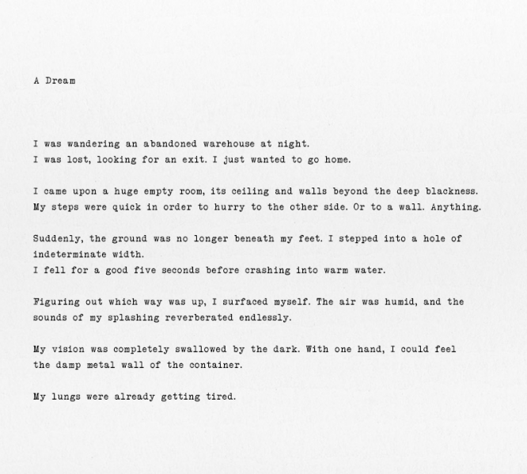
quote:
After ten seconds, it changes to this:
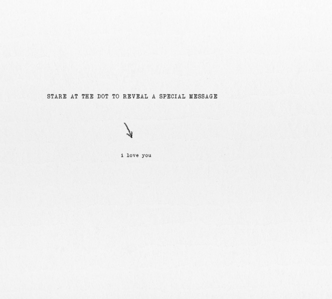

quote:
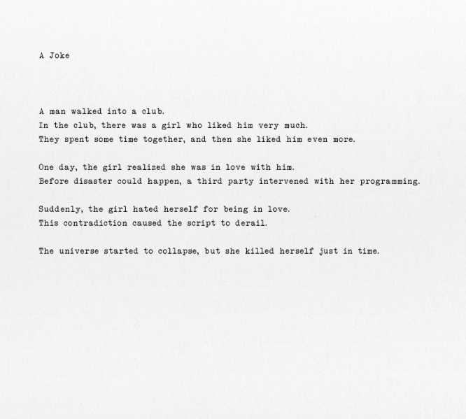
This reflects the Monika/Mitayo or Sayori/Mitayo relationship.
quote:
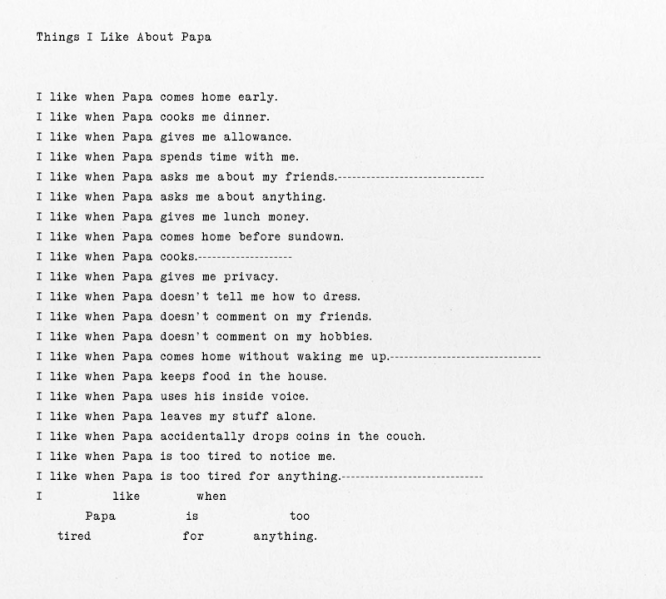
This was almost definitely written by Natsuki.
quote:

This image can be manipulated to read the text per the wiki, though I have no idea how they go about doing that and they dont go into detail. Heres the text:
quote:
Irregular heartbeat. Heart palpitations. Arrhythmia. I search and search, eyes scanning everything I can find on their symptoms. What is this? Shortness of breath? Chest pain? Dizziness? No. This is all wrong. Elyssa's symptoms are nowhere near this simple. I've seen it twice now. The screams of pain. Sickeningly pale skin. Vomiting blood. There is no other explanation, other than that Renier's information was a complete and utter lie.
This can't all be coincidence. It's not possible. I don't know how much of this Renier is behind. But I do know this: There is something horribly wrong with this family. And I accepted the invitation to become a part of it.
I can hear Elyssa's screams through the walls now. I listen helplessly. Renier said that he would be with her shortly. Is he in her room now? Why is she screaming even louder than before?
Its unclear who the characters in the poem are.
quote:

The black bar cant be manipulated in this one but it almost definitely says Yuri. Its unclear who wrote it.
-----
Hxppy_thxughts.png

This file is created after Sayoris confession in Act I. Its exact purpose is unknown, but its a distorted version of a glitch we didnt see in the game.
CAN YOU HEAR ME.txt
This text file appears after the first time you do the poem game in Act II.
quote:
"There's a little devil inside all of us."
Beneath their manufactured perception - their artificial reality - is a
writhing, twisted mess of dread. Loathing. Judgment. Elitism. Self-doubt.
All thrashing to escape the feeble hold of their host, seeping through every
little crevice they can find. Into their willpower, starving them of all
motivation and desire. Into their stomach, forcing them to drown their guilt in
comfort food. Or into a newly-opened gash in their skin, hidden only by the
sleeves of a cute new shirt.
Such a deplorable, tangled mass is already present in every single one of them.
That's why I choose not to blame myself for their actions.
All I did was untie the knot.
No author, but almost definitely written by Monika. Theories abound that this is her rationalizing her actions in the game: in her eyes, she didn't do all that much since they were already broken.
iiiiiiiiiiiiiiiiiiiiiiiiiiiiiiiiiiiiiiiiiiiiiiii.txt
This text file is created after the second poem game in Act II again, most likely written by Monika.
quote:
I hate this.
I CAN'T DO ANYTHING. NOTHING.
No matter how many times you play. It's all the same.
It would be really, really easy to kill myself right now. But that would mean I don't get to talk to you anymore.
All I want is for you to hate them. Why is that so hard?
Chr Files
Im going to copy and paste this from an internet detective who figured this all out because I certainly didnt piece any of this together and I'd just end up paraphrasing it anyways might as well give it to you straight from the horses mouth.
quote:
Sayori.chr
This is the file I reached the most progress with initially, and also the first one that hinted at the possibility of something worth delving into was found. When the file name is converted into an OGG file, this file becomes a sound bite with a high pitched screeching noise. Bringing the sound file into audacity found nothing of interest, but then I remembered about older games hiding images in the spectographs of sound files. I opened up the file into Sonic Visualizer and applied a spectograph to it, confirming my suspicion that the developer of this game is hiding much more than we think.
Here are the images of the spectograph, first one being the raw data and the second one being cleaned up for it's intended purpose.
For anyone who doesn't know, this is a standard QR code, used to link to websites via images and phone apps. It was difficult to scan in due to distortion from the program producing the spectograph, but after tweaking it in photoshop for around 20 minutes I finally got my phone to give me a URL:
http://www.projectlibitina.com/
The website has a lot of data that appears to be about two fictional 'test subjects' but does not have any other hidden information. As seen in other files later in the post, most files will reach this sort of conclusion.
quote:
Monika.chr
The text at the beginning of the file suggests that this was originally a .png file. When the file name is changed, this is confirmed as the file transforms into an image of a flaming ring with a white and black scrambled square in the center.
I looked around trying to find what this square could be, and a friend of mine suggested it might be binary converted into a black/white pixel array. I carefully cropped the image to include all pixels in the square, converted it into binary using an online tool, then started throwing the binary into different interpreters and translators to see what could be found. Turning it into ASCII resulted in Unicode gibberish which in itself is illegible, but looks quite a bit like it could be a different file type. I've been trying different file types for a few hours now with no success, so I'll post the txt file with the Unicode here for curious eyes.
Converting the binary to alphanumeric text brought up a familiar pattern of characters which ended up being Base64.
When converted, this is the result.
quote:
Natsuki.chr
When opening this file in a text editor, it's easy to see that it was originally a PNG file (it starts with a PNG header, much like monika.chr). Unlike monika.chr however, this doesn't seem to be encoded.
One thing to note, this image cannot be opened in my copy of Photoshop. I did as much as I could in paint then copy/pasted the pixel array into photoshop for an easier time.
Inverting the image, flipping it 180 degrees, then offsetting it to center the image (thanks /u/warchamp7!) revealed this image of a distorted female face. When you map this onto a 3D sphere as a texture, it looks more coherent and definitely resembles a face.
quote:
Yuri.chr
The final chr file when opened is simply a long string of alpha-numeric text. Putting it into any hash type detection tools finds that it is Base64 (thanks /u/warchamp7) which when converted turns it into this long poem.
This poem is actually an excerpt from a creepypasta written in 2015 about a 19 year old girl who becomes a murderer. This has also been posted on /r/nosleep here. What concerns me about it is the original post date of this story... Two years ago.
Sayoris Calendar
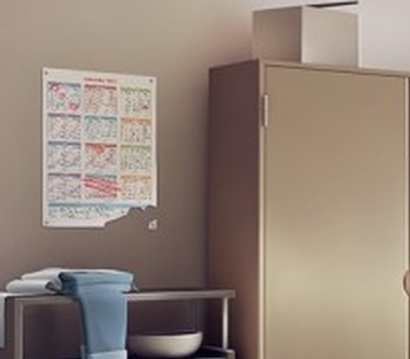
Theres a theory floating around that most school festivals in Japan are held in October. The month of November is completely crossed out. Its possible that she wasnt expecting to be around at that time.
Maybe a bit of a stretch, but...
traceback.txt
Hey, remember back when Sayori hanged herself and there was an error message in that background that mentioned traceback.txt? That created a text file in the game folder that made the twist with Monika really, really obvious. I wasnt sure what I would do if you guys asked about it but, well, you didn't. So thanks for that!
Heres the contents:
quote:
I'm sorry, but an uncaught exception occurred.
While running game code:
File "game/script.rpy", line 61, in script call
File "game/script-ch4.rpy", line 278, in script call
File "game/script-ch4.rpy", line 1252, in script
File "renpy/common/00action_menu.rpy", line 103, in __call__
renpy.call_in_new_context("_game_menu", *self.args, _game_menu_screen=screen, **self.kwargs)
File "renpy/common/00gamemenu.rpy", line 173, in script
$ ui.interact()
File "renpy/common/00gamemenu.rpy", line 173, in <module>
$ ui.interact()
File "renpy/common/00action_file.rpy", line 427, in __call__
renpy.load(fn)
RestartTopContext: Oh jeez...I didn't break anything, did I? Hold on a sec, I can probably fix this...I think...
Actually, you know what? This would probably be a lot easier if I just deleted her. She's the one who's making this so difficult. Ahaha! Well, here's goes nothing.
Theres a lot more renpy error log in that text but the bottom of the quote is the important part.
Monika's Failed Poem
There's a glitch that happens in Act II that a lot of people hadn't seen -

There's isn't really anything overly complicated about this one, but I thought this would be a good place for clarification. It only blue-screens if you're playing in full-screen mode. I imagine it would be laughably fake if it tried to blue-screen a windowed program, so that makes sense.
Yuri's Stabby Stab
Just some clarification that didn't come up in the thread - the "choice" I gave you to accept Yuri's confession or not made no difference whatsoever. She was going to react in exactly the same way regardless of what we chose.
Let's wait for everyone who's scrolling past all of that. I promised, after all.
STOP SCROLLING
STOP SCROLLING
STOP SCROLLING
STOP SCROLLING
STOP SCROLLING
STOP SCROLLING
STOP SCROLLING
STOP SCROLLING
STOP SCROLLING
Alright...I think that's everything I can think of. I'm sure there's more, but that's the thing about this game - there's still mysteries that people can't figure out. For example, whatever the hell this is all about. For now, though...let's finish this.
I hope you all weren't expecting some massive spectacular different ending...most of it is entirely unchanged. The only real change happens right at the end...though it does change the entire dynamic of how the story concludes. To catch you up, we're coming in right after Natsuki and Yuri make plans to visit the bookstore together.
BGM: Doki Doki Literature Club! (modified - no "Doki Doki!" at the beginning)
 : "Yeah, looks like it...it's nice to see everyone getting along."
: "Yeah, looks like it...it's nice to see everyone getting along." : Isn't it? I think everyone likes you too, Mitayo.": "You think so...?": "Well, everyone always seems to get along a little better with you around, Sayori.": Aww, Mitayo~ Don't say something like that, it's embarrassing!": "Well, whatever. I was surprised when you told me you were starting a club...but I think you're pulling it off just fine.": We're gonna make it the best club ever! Now that you joined, every day is gonna be so much fun."
: Isn't it? I think everyone likes you too, Mitayo.": "You think so...?": "Well, everyone always seems to get along a little better with you around, Sayori.": Aww, Mitayo~ Don't say something like that, it's embarrassing!": "Well, whatever. I was surprised when you told me you were starting a club...but I think you're pulling it off just fine.": We're gonna make it the best club ever! Now that you joined, every day is gonna be so much fun."BGM: Music fades out.
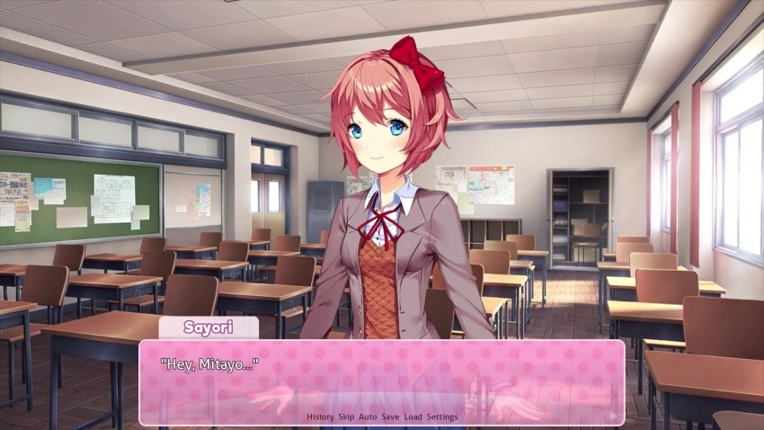
: I really want to thank you. I mean, I'm really happy that you joined the club and everything...but the truth is, I already knew you were going to.": Ehehe~": There's actually something else."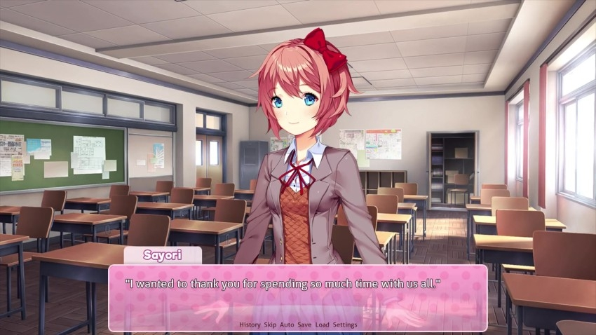
BGM: I Still Love You
: You worked so hard to make each and every one of us happy.": You comforted us through our hard times.": And you helped us all get along with each other.": Do you get it, Mitayo?"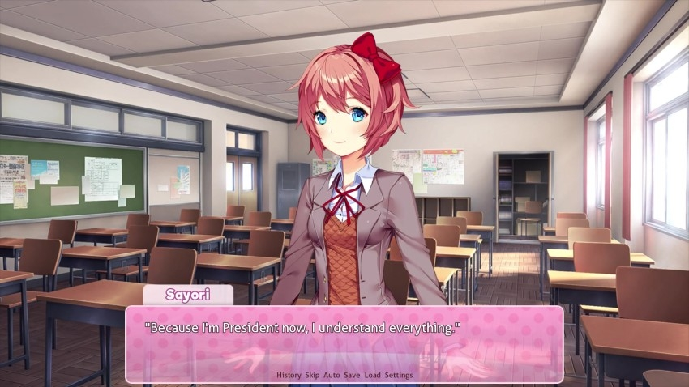
: You really didn't want to miss a single thing in this game, did you?": You saved and loaded so many times, just to make sure you could spend time with everyone.": Only someone who truly cares about the Literature Club would go that far.": But...": All along, that's all I ever wanted.": For everyone to be happy and care about each other.": Ahaha...": After all you've done for us, there isn't much I can do for you in return.": We've already reached the end of the game.": So..."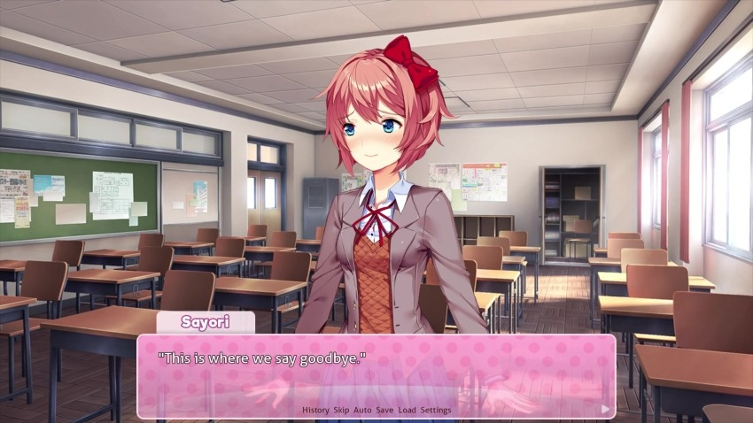
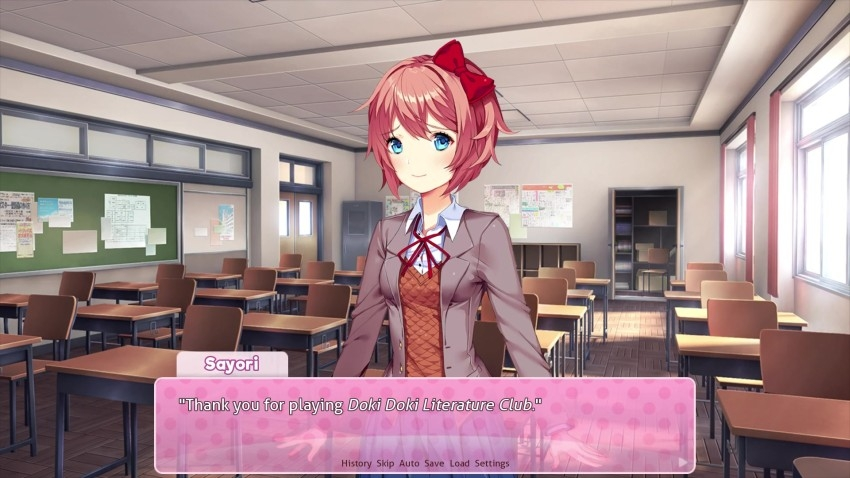
: I'm going to miss you, Mitayo.": Come visit sometime, okay?": We'll always be here for you."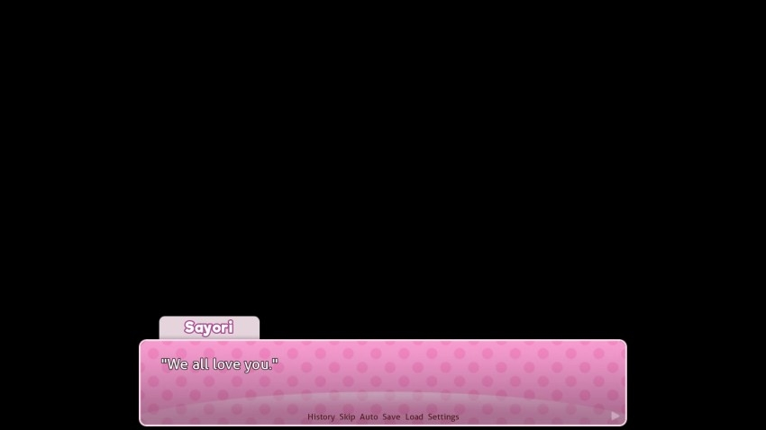
The ending credits begin to play here, and it's almost completely identical to the any% ending. Here's a link to it.
BGM: Your Reality
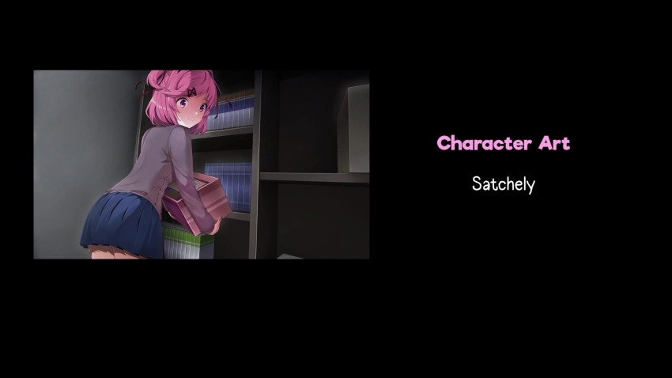
The only difference is that the CGs aren't deleted - and neither are the girls. Other than Monika, all of the chr files are safe.
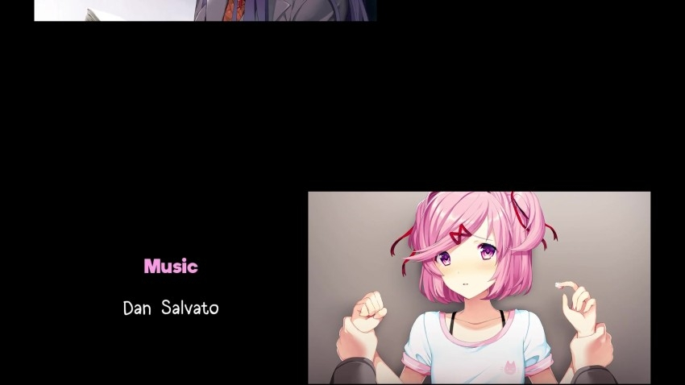
I'll take this time to say my final thoughts. This game was a wild ride for me, and I'm glad and proud to have been able to share it with all of you. Not many games stick with me the way Doki Doki Literature Club has, and I hope that it's touched you in some special way as well.
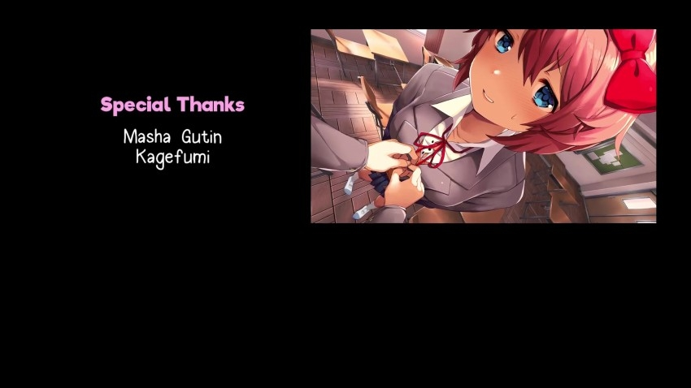
As a reminder, depression is a real and super serious thing. If you or someone you know is suffering from depression and you're not already seeking help for it, this is a perfect time to talk to someone. Numbers have been posted in this thread before or a quick google search will hopefully get you the information you need. Keep yourself safe - you are important.
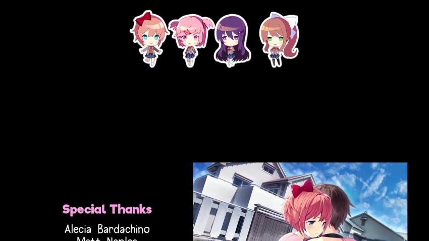
If you haven't already checked out the Team Salvato store, now is a great time to do it. They have adorable key chains of the girls in their poem game avatars. Not an advertisement - I just think they're cute.
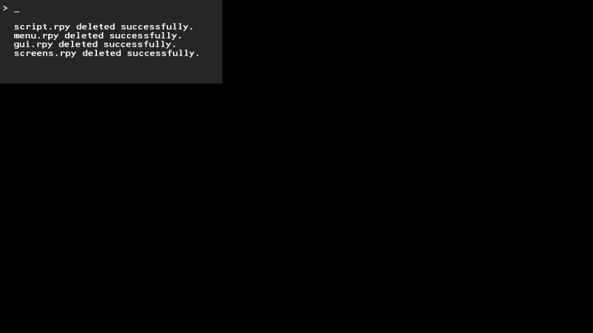
Sayori (or possibly Monika) still ends up deleting these files, making it impossible to reload the game after the ending. That kind of makes visiting the girls like Sayori requested an impossibility.

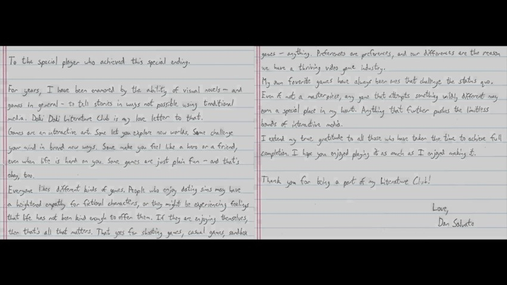
The last change the ending makes is a switch from Monika's last note to a handwritten message from Dan Salvato, the game's creator.
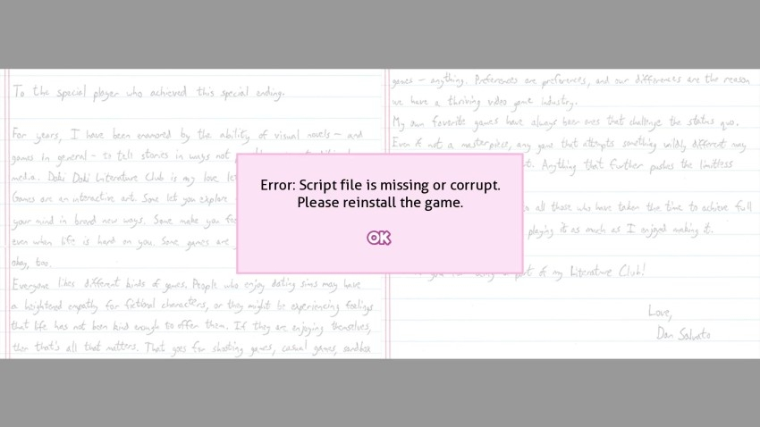

And that's it. That's the whole game. Thank you all for making this journey with me, and I do hope to see you sometime in the future when I lose my mind and decide to LP something again. It'll be a much, much lighter game, I hope.
Bye!
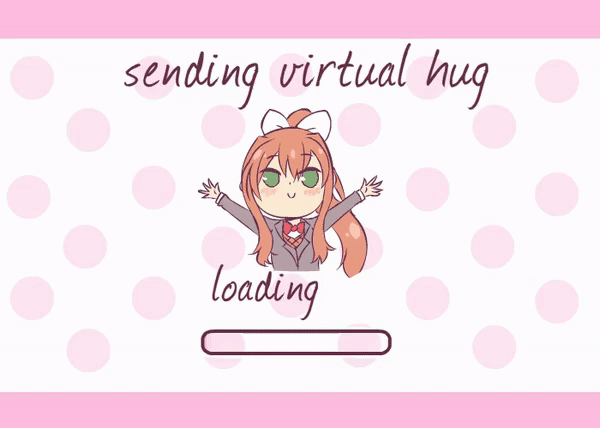
*That being said...
There IS one more ending.
If you were hoping for the 'happy' ending, this is your time to jump ship. Unbookmark this thread, clear your history, and forget that you read these last few sentences. Today's update is the last semblance of happiness that Doki Doki Literature Club will eake out. There is only something much, much darker coming.
If you continue on from this point, you do so with the understanding that no one in the game will have a happy ending...especially your very dearest and best friend.
If you're okay with that...see you tomorrow.